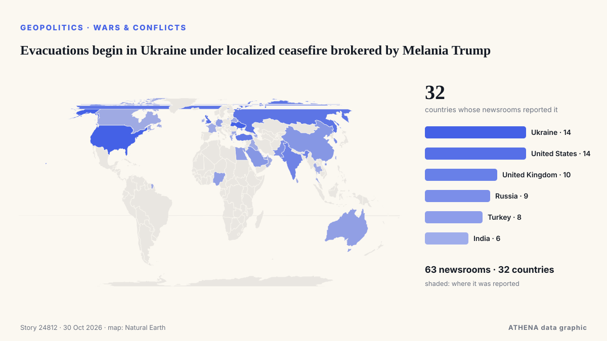

Evacuations begin in Ukraine under localized ceasefire brokered by Melania Trump

Residents of the Russian-occupied Ukrainian town have reported a worsening food crisis since 2022. von Express Tribune
Unabhängig gemeldet von 63 Medien in 32 Ländern seit dem 23. Okt., zuerst von Express Tribune; die Berichterstattung flaut ab. ATHENA stuft das Risiko als mäßig ein (3.4/10), vor allem wegen der Schwere des beschriebenen Schadens und seiner geografischen und sektoralen Reichweite. Die Konfidenz liegt bei 92 % (hoch): 63 Medien bestätigen es unabhängig, bei einer mittleren Verlässlichkeit der Quellen von 77 %. Medien nach Land: Ukraine (6), Türkei (4), Vereinigte Staaten (4). Berichterstattung: 23. Okt. bis 23. Okt., 7 Stunden.
Warum es wichtig ist: Russlands Großangriff auf die Ukraine begann im Februar 2022. Dieser Tracker verfolgt die Kämpfe, Angriffe auf Infrastruktur und die Diplomatie rund um den Krieg, wie Redaktionen weltweit darüber berichten.
Was sich geändert hat: 2 neue Berichte von 2 Redaktionen in den 24 Stunden bis 30. Okt..
Erste Schlagzeile: Officials confirm ceasefire for Russian-held Oleshky
Schlagzeilen werden auf Englisch angezeigt, wie veröffentlicht.
Auf einen Blick
Ausgewählt, bewertet und geschrieben nach der veröffentlichten Methodik von ATHENA. Kein Redakteur greift in einzelne Ereignisse ein. So entsteht ATHENA ›
| 23 Oct 09:12 UTC | 61 |
|---|---|
| 23 Oct 21:12 UTC | 8 |
| 24 Oct 09:12 UTC | 4 |
| 24 Oct 21:12 UTC | 3 |
| 25 Oct 09:12 UTC | 1 |
| 25 Oct 21:12 UTC | 0 |
| 26 Oct 09:12 UTC | 2 |
| 26 Oct 21:12 UTC | 11 |
| 27 Oct 09:12 UTC | 15 |
| 27 Oct 21:12 UTC | 1 |
| 28 Oct 09:12 UTC | 5 |
| 28 Oct 21:12 UTC | 0 |
| 29 Oct 09:12 UTC | 2 |
| 29 Oct 21:12 UTC | 0 |
| 30 Oct 09:12 UTC | 2 |
| 23 Oct 13:31 UTC | 0.0 |
|---|---|
| 23 Oct 13:41 UTC | 1.1 |
| 23 Oct 13:43 UTC | 1.7 |
| 29 Oct 12:51 UTC | 3.7 |
| 30 Oct 16:55 UTC | 3.4 |
Warum diese Zahlen
Bedeutung
Risiko
Konfidenz
Die Berichterstattung – wer berichtete, und wann
Schlagzeile wie veröffentlicht · öffnet das Original- Express Tribune · PakistanRussia, Ukraine agree to Oleshky ceasefire brokered by Melania Trump: White House
- CGTN (World) · ChinaRussia and Ukraine agree to temporary ceasefire in Oleshky
- Xinhua (English) — page reader · ChinaFlash: White House says Russia, Ukraine agree to temporarily stop military action in Oleshky
- APA (English) · AserbaidschanMelania Trump secures Oleshky ceasefire between Russia, Ukraine, White House says
- The Straits Times · SingapurRussia, Ukraine agree to ceasefire in Ukrainian city hit by food crisis, brokered by Melania Trump
- Kyiv Independent · UkraineUkraine confirms Oleshky ceasefire mediated by Melania Trump between Russia, Ukraine
- Al Jazeera English · KatarMelania Trump ‘secured ceasefire’ in Ukrainian city of Oleshky: White House
- Business Recorder · PakistanMelania Trump secures Oleshky ceasefire between Russia, Ukraine, White House says
- Ukrainska Pravda (English) · UkraineWhite House claims Melania Trump has secured ceasefire in Oleshky
- Anadolu Agency (English) · TürkeiUS first lady announces ceasefire agreement between Russia and Ukraine in city of Oleshky
- Türkiye Today · TürkeiOleshky to get aid, evacuation route under Melania Trump-brokered truce
- CBS News (World) · Vereinigte StaatenMelania Trump secures "temporary ceasefire" in Ukrainian city
- Meduza (English) · RusslandRussia, Ukraine agree to ceasefire to evacuate Oleshky residents
- Cyprus Mail · ZypernRussia, Ukraine agree to Oleshky ceasefire brokered by Melania Trump
- PBS NewsHour · Vereinigte StaatenMelania Trump helps forge ceasefire deal in Russian-occupied Ukrainian city so aid can be delivered
- Xinhua (English) — page reader · ChinaUrgent: White House says Russia, Ukraine agree on ceasefire in Oleshky
- Novaya Gazeta Europe (EN) · RusslandRussia and Ukraine agreed to ceasefire in occupied Oleshky, White House says
- Times of India · IndienRussia-Ukraine war: Melania's 'intervention' secures one-city ceasefire
- BBC News · Vereinigtes KönigreichWhite House says Melania Trump brokered truce for Ukraine city 'on brink of disaster'
- The Jerusalem Post · IsraelMelania Trump secures Oleshky ceasefire between Russia, Ukraine, White House says
- The Moscow Times · RusslandMelania Trump Brokers Ceasefire in Occupied Ukraine’s Oleshky
- RTÉ News · IrlandOfficials confirm ceasefire for Russian-held Oleshky
- Vanguard · NigeriaMelania Trump says secured ceasefire in Ukrainian city of Oleshky
- Oman Observer · OmanMelania Trump claims ceasefire secured in Ukraine’s Oleshky
- Ukrinform (English) · UkraineMelania Trump announces localized ceasefire between Russia and Ukraine for Oleshky
- The Hill · Vereinigte StaatenMelania Trump brokers localized Russia-Ukraine ceasefire, White House says
- Fortune · Vereinigte StaatenWhite House says Melania Trump brokered a Russia-Ukraine ceasefire—but just in one city
- Kyiv Post · UkraineWhite House Says Russia, Ukraine Agree to Oleshky Truce
- TASS (English) · RusslandRussia, Ukraine agree to ceasefire in Alyoshki — White House
- NDTV · Indien"Situation Dire": Melania Trump Secures Ceasefire In Ukrainian City
- Cyprus Mail · ZypernKremlin confirms Oleshky ceasefire, says working with Ukraine on evacuation timing
- Novinite · BulgarienMelania Trump Brokers Russia-Ukraine Ceasefire in Oleshky
- The Straits Times · SingapurKremlin confirms Oleshky ceasefire, says working with Ukraine on evacuation timing
- Ukrinform (English) · UkraineUkraine confirms local ceasefire to enable evacuation from Oleshky
- Anadolu Agency (English) · TürkeiMelania's focus is ‘to save children,’ Trump says after Oleshky truce deal
- Punch · NigeriaMelania Trump says secured ceasefire in Ukrainian city of Oleshky
- Ukrainska Pravda (English) · UkraineKremlin confirms ceasefire will be declared in Oleshky
- Anadolu Agency (English) · TürkeiKremlin welcomes Melania Trump’s efforts on Oleshky truce
- Indian Express · IndienHow Melania Trump helped broker Oleshky ceasefire between Russia, Ukraine. White House reveals
- The Independent · Vereinigtes KönigreichMelania Trump claims to have secured ceasefire for single Ukrainian town in surprising peace breakthrough